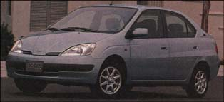

The TOYOTA PRIUS, already in showroms around the country, constantly regulates the power between its 1.5-liter conventional gasoline engine and its electric motor in order to maximize drivability and eficiency. It gets 80 miles to the gallon, 680 miles pertank, and, at$16,500, the Prius is priced to compete.